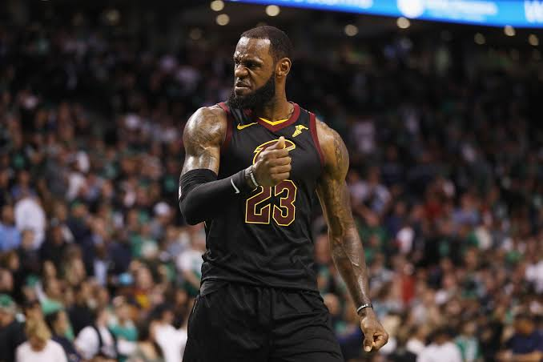
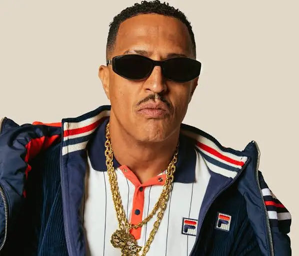

Pessoas me Inspiram
LeBRON JAMES

LeBron Raymone James (Akron, 30 de dezembro de 1984) é um basquetebolista norte-americano que atua como ala no Philadelphia 76ers da National Basketball Association.
Apelidado de King James, é amplamente reconhecido como um dos maiores jogadores de basquetebol de todos os tempos, ocupando a segunda posição na lista divulgada pela ESPN em 2020, atrás apenas de Michael Jordan. LeBron conquistou quatro títulos da NBA, quatro prêmios de MVP da NBA e quatro prêmios de MVP de Finais da NBA, além de quatro medalhas olímpicas com a Seleção Norte-Americana. LeBron é o maior pontuador e o quarto jogador com mais assistências na história da NBA.
Fonte: https://pt.wikipedia.org/wiki/LeBron_JamesLebron James me inspira pois foi o jogador que me apresentou o basquete, o fato dele ser campeão em todos os times que jogou, de sempre se superar fisicamente para aguentar jogar mesmo com mais de 40 anos, faz com que eu queira acompanhar toda a tragetória da carreira dele.
Mnno Brown

Pedro Paulo Soares Pereira OMC (São Paulo, 22 de abril de 1970), mais conhecido como Mano Brown, é um cantor, compositor, empresário e apresentador brasileiro. Ele é um dos integrantes dos Racionais MC's, grupo de rap formado na capital paulista em 1988. A revista Rolling Stone promoveu em outubro de 2008 a lista dos 100 maiores artistas da música brasileira, na qual Brown ficou no 28.° lugar.
Fonte: https://pt.wikipedia.org/wiki/Mano_BrownMano Brown me apresentou o Rap Nacional, desde menino eu ouço as músicas dele e do Racionais MC's. Toda a voz que ele traz para o povo preto, periférico do Brasil me motiva em como me portar, do que fazer ou não fazer e principalmente em questões raciais que é muito importante.